{kind=link}
Contenido
[ocultar]Introducción
El Skybot es un robot móvil, que se desplaza mediante dos ruedas motrices y está dotado de sensores para reaccionar ante estímulos del medio. Es un robot "hola mundo". Está pensado para aquellos que quieren iniciarse en el mundo de la robótica y los microcontroladores. A diferencia de otros, el Skybot NO es un juguete. Su electrónica es la misma empleada en robots más avanzados tanto comerciales como de investigación. Por ello, a partir de este robot es muy fácil desarrollar otros más complejos.
| ¿Cómo empezar en robótica?. Lo mejor es comenzar construyendo un robot, entenderlo y luego modificarlo. Esa es la filosofía del Skybot: Aprende con un ejemplo, modifícalo a tus necesidades. |
Demostraciones con el Skybot
El Skybot puede funcionar en modo autónomo ejecutando el software que está grabado en el microcontrolador o bien estar tele-controlado desde un PC.
Robot en modo autónomo
La aplicación típica es la de hacer que el robot siga una línea negra sobre un fondo blanco. Los sensores que lleva en la parte frontel le permiten distinguir los colores blanco y negro.

El robot Skybot siguiendo una línea negra |
{kind=link}
Robot Tele-controlado desde el PC
El robot se conecta al ordenador por un cable serie y podemos hacer programas que lo tele-controlen. El cable se puede sustituir por un enlace Bluetooth. Una aplicación muy divertida es mover el robot con el mando de la wii.

Moviendo el skybot con Tarri-wheel! |

Moviendo el Skybot con el mando de la wii... |
Características
{kind=link}
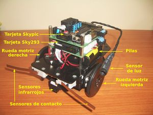
|
Mecánica
La estructura mecánica está compuesta por 7 piezas de metacrilato de 3mm, dos servos Futaba 3003 trucados y una rueda loca. Es una estructura fácilmente replicable y se pueden emplear materiales como madera, PVC expandido, aluminio, etc. Las piezas se unen mediante pegamento y los motores se sujetan mediante tornillos normales de métrica 4. Tanto la tornillería como la rueda loca se encuentran en cualquier ferretería.
| 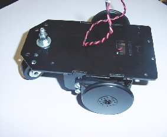 Chásis del Skybot. Vista superior |
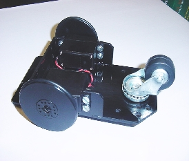 Chásis del Skybot. Vista inferior |
Esta estructura ha sido diseñada por Andrés Prieto-Moreno
Electrónica
El Skybot utiliza las tarjetas Skypic como procesadora y Sky293 para los sensores y la etapa de potencia. Ambas se unen formando una torre, colocándose encima del chásis.
| 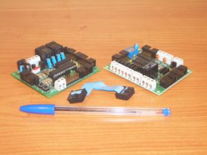
Tarjetas Skypic y Sky293 |
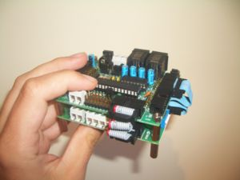
Tarjetas Skypic y Sky293 conectadas en torre |
{kind=link}
{kind=link}
La electrónica es genérica e independiente de la estructura mecánica. Esto ofrece tres ventajas:
- Reutilización. La electrónica se puede emplear en otros diseños, bien para nuevos robots o bien para otras aplicaciones. Por ejemplos, el robot cuadrúpedo PuchoBot II o el robot gusano Cube Revolutions utilizan la Skypic como controladora.
- Usar otra electrónica. Sobre la estructura del Skybot podemos colocar otra electrónica diferente, como por ejemplo una diseñada por nosotros.
- Usar otra estructura. La estructura del skybot se puede cambiar por otra, usándo la misma electrónica. Por ejemplo hacer un chásis de aluminio y usar unos motores más potentes. Por ejemplo se ha usado para construir el primer prototipo del Robot_FlatBot.
Enlace directo a los esquemas electricos
| Skypic Planos Esquemático, PCB y ficheros de fabricación | |
| Sky293 Planos Esquemático, PCB y ficheros de fabricación |
Software
La tarjeta Skypic lleva un microprocesador PIC16F876A. Existen muchas aplicaciones para la programación de los PIC, como o el MPLAB de Microchip o el ICPROG, de un programador independiente. Todas ellas se pueden utilizar con el Skybot. Sin embargo, hemos seleccionado una serie de aplicaciones para disponer de un entorno libre y multiplataforma, que permita manejar el Skybot desde Gnu/Linux, Windows, FreeBSD o Mac.
Programa de pruebas: Skybot-test
Para controlar el Skybot y leer el estado de todos sus sensores se puede utilizar el programa Skybot-test. Permite mover el robot y comprobar si los sensores están funcionando.
| 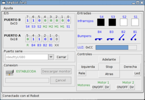
Pantallazo de Skybot-test-1.0 en Gnu/Linux |

Pantallazo de Skybot-test-1.0 en Windows XP |
{kind=link}
Entorno usado en los talleres de robótica
Para los Talleres de robótica con el Skybot, hemos optado por las siguientes alternativas:
- Un Bootloader grabado en el PIC, lo que permite la rápida descarga de programas en la Skypic sin usar grabador.
- Descarga de programas en el PIC: Aplicación Pydownloader, escrita en Python.
- Programación en lenguaje C. Utilizamos el compilador libre SDCC.
- Más información
Ejemplos de programación en C
Aquí están los ejemplos de programación del Skybot en lenguaje C (usando la librería fácil).
Documentación
|
Índice del taller del Skybot:
- Sesión 1 : Construcción de la estructura mecánica y trucaje de los servos
- Sesión 2 : Finalizar la estructura, conectar todos los sensores y probar el robot
- Sesión 3 : Instalación del software. Programa “hola mundo”.
- Sesion 4 : Programación del Skybot
- Sesión 5: El concurso del Mogollón.
Aplicaciones
Algunos ejemplos de manejo del Skybot y robots basados en él:
- Control del Skybot con el mando de la wii
- Wiilson: Skybot + Wii + PWM
- Star Destroyer: Destructor de Star Wars movido con WII !!!
Fotos
| 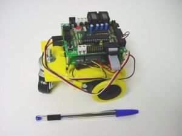 Maqueta preliminar del Skybot |
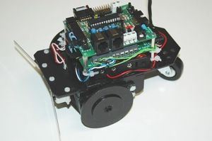
Skybot v1.0. Vista lateral |
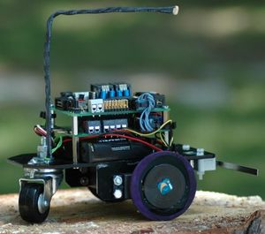
Skybot v1.0. Vista lateral |
| 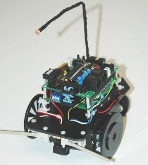
Skybot v1.0. Vista frontal |
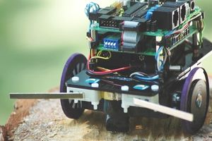
Skybot v1.0. Vista frontal de cerca |
{kind=link}
{kind=link}
{kind=link}
{kind=link}
{kind=link}
Lista de Correo
Lista de correo para el intercambio de información, discusión, etc, sobre el Skybot, la Skypic, Skycontrol y en general robótica y electrónica:
|
Repositorio
- SVN del proyecto http://svn.iearobotics.com/Skybot
Para obtener la versión estable actual del SVN:
svn co http://svn.iearobotics.com/Skybot/skybot/skybot-2006
Descargas
Electrónica
| Skypic Planos | Esquemático, PCB y ficheros de fabricación |
| Sky293 Planos | Esquemático, PCB y ficheros de fabricación |
Planos mecánicos
| skybot-v1.0.zip | Planos del Sybot v1.0, en DXF. Se pueden visualizar con Qcad
o Autocad.
|
| skybot-chasis.pdf | Piezas que componen el Chasis. Fabricación mediante corte por láser |
| Skybot-ruedas-G2.pdf | Ruedas. Generacion 2. Incorporan una goma tórica para mejorar el agarre. |
| Skybot-ruedas-G1.pdf | Ruedas. Generacion 1. Fabricación mediante corte laser. Pensadas para poner alrededor de ellas la goma de un globo |
Circuitos de pruebas
Circuitos para que el Skybot los siga. Imprimir en papel Din-A4 con impresora láser. Los circuitos en formato SVG se pueden editar con el programa multiplataforma Inkscape.
| Skybot-circuito-1.pdf | Circuito 1. En PDF. |
| Skybot-circuito1.svg | Circuito 1. Fuentes en SVG. |
| Skybot-circuito2.pdf | Circuito 2. En PDF. |
| Skybot-circuito-2.svg | Circuito 2. Fuentes en SVG.
|
{kind=link}
{kind=link}
Enlaces
¿Dónde comprar el Skybot?
El Skybot es un robot Libre, cualquiera lo puede construir, modificar, distribuir o vender. Estas son algunas empresas que lo comercializan:
| Kit Skybot en Robot Premiere |
Historia
El Skybot es una evolución del robot Tritt, que desarrollamos en 1997 para impartir talleres de robótica en nuestra universidad. Más tarde este robot fue comercializado por la empresa Microbótica S.L, de la que formábamos parte.
El Skybot nació en el 2004. La estructura de Tritt era de lego y el microcontrolador un 6811 de Motorola. Estos dos componentes quedaron obsoletos por lo que decidimos crear una estructura mecánica y electrónica nuevas. El nombre de Skybot viene de Skynet, el ordenador de la película Terminator. Usamos el prefijo SKY para identificar las diferentes tarjetas: Skypic, Sky293 y el robot Skybot.
Resumen de la historia del Skybot:
| [Jul-2009] | Taller de robótica básico en las III Jornadas de Inicialización a la Universidad (UAM 2009) ( Más información) |
| [Jun-2009] | V Taller de robótica en la Universidad Autónoma de Madrid ( Más información) |
| 15/Dic/2009 | Robotpremiere vende su primer Skybot, a un particular en Madrid |
| 20/Nov/2009 | El Skybot lo empieza a comercializar la tienda Robotpremiere |
| [Oct-2008] | Skybot 1.5. Se sustituye el jack de elimentación por un interruptor. Taller Robótica Básica. Campus Party Iberoamérica. ( Más información) |
| [Jul-2008] | IV Taller de robótica en la Campus Party 2008 de Valencia ( Más información) |
| [Jul-2008] | IV Taller de robótica en la Universidad Autónoma de Madrid ( Más información) |
| [Jun-2008] | Skybot movido por primera vez usando la Wii-board. (Blog) ( Más información) |
| [Abril-2008] | Skybot mostrado en la Jornadas para alumnos de altas capacidades de la comunidad de Madrid, en la UAM. ( Más información) |
| [Dic-2007] | Skybot mostrado en la charla "La granja de micro-robots". Móstoles. Mádrid. |
| [Nov-2007] | Skybot mostrado en la charla "La granja de micro-robots". LudusParty. Lugo |
| [Jul-2007] | III Taller de iniciación a la robótica en CampusBot. CampusParty. Valencia. (Más información). (Documentación) |
| [Jul-2007] | Nace Skybot v1.4. III Taller de iniciación a la robótica Universidad Autónoma de Madrid. El robot es igual al v1.3, pero ahora se utiliza la librería Skybot de Javier Valiente para facilitar la programación. (Documentación) |
| [Mayo-2007] | Skybot mostrado en la charla "La granja de micro-robots". Nebrija Lan Party. Madrid (Más información) |
| [Abril-2007] | Skybot mostrado en la charla "La granja de micro-robots". EbroParty. Miranda de Ebro. Burgos. (Más información) |
| [Abril-2007] | Skybot mostrado en la charla "La granja de micro-robots". Enred@. Isla Cristina. Huelva (Más información) |
| [Abril-2007] | Control del Skybot mediante el mando de la wii. (Más información) |
| [Marzo-2007] | Skybot mostrado en la charla "La granja de micro-robots". I Jornadas de ARDE. Málaga. (Más información) |
| [Feb-2007] | II Taller de iniciación a la robótica en la Universidad Autónoma de Madrid. (Más información) (Documentación) |
| [Nov-2006] | Skybot mostrado en la charla "La granja de micro-robots". LudusParty. Lugo |
| [Julio-2006] | II Taller de iniciación a la robótica CampusBot. (Más información) (Documentación) |
| [Julio-2006] | Skybot mostrado como parte de los robots de la "Granja de Micro-Robots" en la Party Quijote en Ciudad Real. (Más información) |
| [Feb-2006] | Nace Skybot v1.3. I Taller de Robótica en la Universidad Autónoma de Madrid. Se sustituyen las antiguas ruedas por las nuevas que usan una goma tórica para un mejor agarre (Más información) (Documentación) |
| [Nov-2005] | Nace Skybot v1.2. Taller de Robótica en la Universidad de Cádiz. La tarjeta CT293 se sustituye por la nueva sky293. (Más información) (Documentación) |
| [Jul-2005] | Primer taller de robótica con el Skybot. Campus Bot. Campus Party 2005. Valencia. (Más información) (Documentación) |
| [Junio-2005] | Nace Skybot v1.0 llevado a la V muestra de Microbótica en la Universidad de Málaga. (Más información) |
| [Abril-2005] | Prototipo mostrado en las Sesiones de robótica organizadas por la Comunidad de Madrid en la Universidad Pontificia de Salamanca. (Más información) |
| [Nov-2004] | Prototipo inicial mostrado por primera vez en la IV Semana de la Ciencia en Madrid en Universidad Pontificia de Salamanca en Madrid. (Más información) |
| [1997-2004] | Microbot Tritt, precursor del Skybot. |
Autores
Licencia
|
|
Créditos
- A Alejandro Alonso por confiar en el SkyBot y por todas las sugerencias para mejorar el concepto inicial
- A Ifara tecnologías por financiar y comercializar el Skybot v1.0, v1.2 y v1.3
Noticias
- 30/Enero/2012: Añadido enlace a RobotPremiere: Venden el Skybot
- 27/Julio/2009. Skybot añadido a un repositorio. Creado plano de las ruedas
- 17/Junio/2008. Migración finalizada (Juan González)
- 15/Mayo/2008. Comenzada esta página. Migración de la documentación en HTML